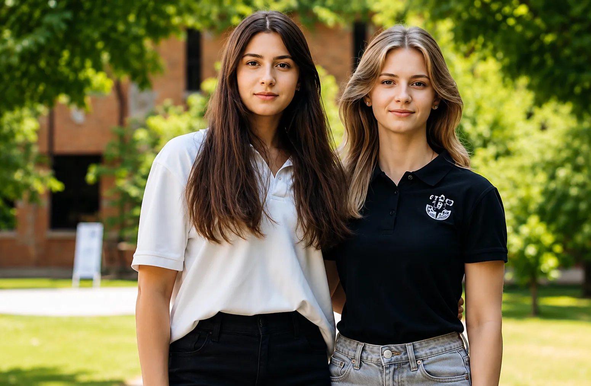

Студентське життя
Навчання - це лише частина шляху. Твоя особистість гартується на хакатонах, у спортивних секціях, на творчих фестивалях і в студентських проєктах. Тут - реальні фото кампусу, соцмережі університету та відео про те, як усе відбувається насправді.
Студентська платформа
Це сучасний цифровий екопростір найстарішого вищого технічного навчального закладу регіону. Тут зібрано все: від розкладу та освітніх сервісів до наукових хакатонів, міжнародних стажувань і унікального ком'юніті.

Повний студентський портал: керуй своїм навчанням та дозвіллям
Ми адаптували складну структуру університету під гнучкий формат, який потрібен сучасному студенту в щоденному житті.
Університет
Дізнайся про історію створення, ректорат, інститути та унікальний кампус у центрі міста.
Читати історію →Навчання
Актуальні освітні програми, силабуси, доступ до індивідуальних траєкторій та сесійного розкладу.
Переглянути спеціальності →Допомога з ДЗ
Студентська взаємодопомога з предметами, підготовкою до екзаменів, курсовими та проєктами.
Попросити допомогу →Знайомства й події
Туси, квести, клуби за інтересами та все, де можна знайти своїх людей у Політехніці.
Дивитись події →Фото зі студентського життя
Аудиторії, лекторії, спортзали й корпуси - так виглядає Політехніка щодня.
Випуск, вручення дипломів і посвята в студенти
Дипломи, мантії та щирі емоції - так закінчується і так починається шлях у Політехніці.
Події та хакатони
Щорічні ІТ-змагання, PolyTech Hack, інженерні виставки, Дні першокурсника та Студвесна в актовій залі головного корпусу.
Спортивні секції
Бадмінтон, футзал, скелелазіння та оновлений зал єдиноборств для тренувань та змагань між інститутами.
Відео про життя університету ▶
 ▶
▶
 ▶
▶
 ▶
▶
 ▶
▶
 ▶
▶
 ▶
▶
Більше відео - на офіційному YouTube-каналі університету або на сторінці «Фото і відео».
Де жити студентові: гуртожитки Політехніки
Тільки офіційна інформація зі сторінок університету про студентське містечко та поселення. Перед поданням документів уточнюйте актуальні умови в адміністративно-побутовій комісії свого інституту чи факультету.
| Гуртожиток | Адреса | Телефон (10:00–16:45) | Поселення від інститутів і факультетів | Примітка |
|---|---|---|---|---|
| Гуртожиток №1 | просп. Дмитра Яворницького, 21 | (0562) 47-39-97 | ФАБЗУ, ННІП, ІГСН | Тут працює адміністрація студентського кампусу |
| Гуртожиток №2 | просп. Дмитра Яворницького, 17 | - | - | За даними університету, на капітальному ремонті |
| Гуртожиток №3 | просп. Науки (раніше Гагаріна), 61 | (056) 744-61-95 | ММФ | - |
| Гуртожиток №4 | просп. Науки (раніше Гагаріна), 59 | (056) 744-61-94 | ФПНТ | - |
| Гуртожиток №5 | просп. Науки (раніше Гагаріна), 57 | (056) 744-11-05 | ІЕЕ (ЕТФ), ФІТ | - |
| Гуртожиток №6 | просп. Олександра Поля, 111-Б | - | - | - |
Хто й як селить
- Гуртожитки призначені насамперед для іногородніх студентів, аспірантів і докторантів на період навчання.
- Поселення здійснює адміністративно-побутова комісія інституту чи факультету; ордер видають у гуртожитку, закріпленому за факультетом, з 8:30 до 17:30.
- У кімнаті поселяють по 3 особи, кімнати забезпечені м'яким інвентарем.
- За наявності місць вступників можуть тимчасово поселити на період вступних випробувань, а студентів заочної форми - на час сесії.
- Перед поселенням завідувач гуртожитку проводить інструктаж з техніки безпеки під розпис, мешканцям видають перепустку.
- Реєстрацію місця проживання здійснює паспортний стіл університету, оплата - за рахунок мешканця.
Терміни поселення 2026 року
| Курс | Коли |
|---|---|
| 1 курс | 27–28 серпня 2026 |
| 2 курс | 29 серпня 2026 |
| 3 курс | 31 серпня 2026 |
| 4 курс | 1 вересня 2026 |
| 5–6 курси | 2–4 вересня 2026 |
Документи для поселення
- Квитанція про оплату проживання.
- Кольорова фотокартка 3×4 (1 шт.).
- Довідка від лікаря.
- Паспорт зразка 1994 року або ID-картка з довідкою про реєстрацію (оригінал) і копія паспорта на одному аркуші.
- Копія ІНН.
Оплата проживання
- Вартість вказується за місяць і включає комунальні послуги. Мінімальна передоплата - 5 місяців.
- У призначенні платежу пишіть «за гуртожиток», номер гуртожитку та повне ПІБ мешканця.
- Актуальні суми та банківські реквізити університету дивіться на офіційній сторінці поселення.
Як отримати місце першокурснику
Вкажіть потребу в гуртожитку під час вступної кампанії або одразу після рекомендації.
Після наказу про зарахування подайте заяву в інституті або на факультеті.
Отримайте направлення з номером гуртожитку, датою прибуття та індивідуальним переліком документів.
Підпишіть договір, ознайомтеся з правилами проживання й виконайте вимоги реєстрації та оплати.
- Студентський кампус: просп. Дмитра Яворницького, 21 (гуртожиток №1)
- Телефон приймальної комісії: +380 56 796-55-66
- Поселення та оплата: сторінка поселення
- Гуртожитки: сторінки гуртожитків
- Для вступників: nmu.org.ua/main/admission/housing
- Порядок поселення: Порядок поселення та проживання (PDF)
Правила внутрішнього розпорядку й порядок виселення наведені в нормативних документах студентського містечка на сайті університету.

Соціальні мережі Політехніки
Анонси подій, ефіри, новини факультетів і закулісся студентського життя - щодня в соцмережах.
Дніпровська Політехніка як сучасний інноваційний кампус
Студенти НТУ «ДП» мають доступ до передової інфраструктури: відреставровані коворкінги, технологічні лабораторії, лекторії європейського зразка та спеціалізовані зони розвитку.
Концепція World Students об'єднує технічну міць університету з комфортом та естетикою. Переконайся, як виглядають наші внутрішні локації для навчання, презентацій та спорту.